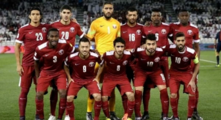

A primeira partida da seleção belga foi disputada a 1 de Maio de 1904, em empate por 3 a 3 contra a França. De início, a equipe contou com ajuda de alguns jogadores ingleses, fazendo com que estas partidas não fossem consideradas. Em 28 de Abril de 1901, o time havia batido Países Baixos por 8 a 0. A equipe recebeu o apelido de Os Diabos Vermelhos do jornalista Pierre Walckiers em 1906, após vitória por 3 a 2 contra Países Baixos em Roterdã. A Bélgica esteve presente em onze mundiais, sendo que sua melhor classificação se deu em 2018 na Russia, onde terminou na terceira colocação. Na Eurocopa, o melhor desempenho foi o vice-campeonato em 1980. Nas Olimpíadas de 1900, a Bélgica foi representada pela Université de Bruxelles e conquistou a medalha de bronze. Na edição de 1920 do torneio, a seleção disputou o campeonato e venceu, conquistando a medalha de ouro. Atualmente, tem a considerada "geração de ouro" da Bélgica. Na Copa do Mundo de 2002, após campanha regular, caiu contra o Brasil em uma das maiores controvérsias em Copas do Mundo na anulação do gol legítimo de Marc Wilmots, onde o árbitro inexplicavelmente marcou falta em cima do então zagueiro brasileiro Roque Júnior. Nas eliminatórias para a Copa do Mundo de 2014, ganhou quase todos os jogos, pois empatou apenas dois e não perdeu nenhum. Na Copa de 2014 fez uma boa campanha chegando as quartas de final e caindo para a Argentina, quando havia vencido 4 partidas, algo até então inédito para a Bélgica, como é uma seleção muito jovem, segue promissora para os próximos anos
Roberto Martínez: a geração belga segue comandada pelo técnico espanhol. Desde 2016 à frente da seleção, vai para a sua segunda Copa. Na primeira, terminou na terceira colocação. Antes de comandar os Diabos Vermelhos, fez toda a carreira como técnico no futebol inglês, onde encerrou a carreira como jogador. Será o terceiro treinador a comandar os belgas em duas
| Principais Jogadores | |||
|---|---|---|---|
| Nome | Idade | Altura | Peso |
| Toby Alderweireld | 33 | 1,85M | 81Kgs |
| Jan Vertonghen | 35 | 1,88M | 75kgs |
| Dedryck Boyata | 31 | 1,88M | 83kgs |
| Thomas Meunier | 31 | 1,91M | 98Kgs |
| Jason Denayer | 27 | 1,83 | 68Kgs |
| Leander Dendoncker | 27 | 1,83m | 78Kgs |
| Brandon Mechele | 29 | 1,91M | 78kgs |
| Timothy Castagne | 26 | 1,85M | 75kgs |